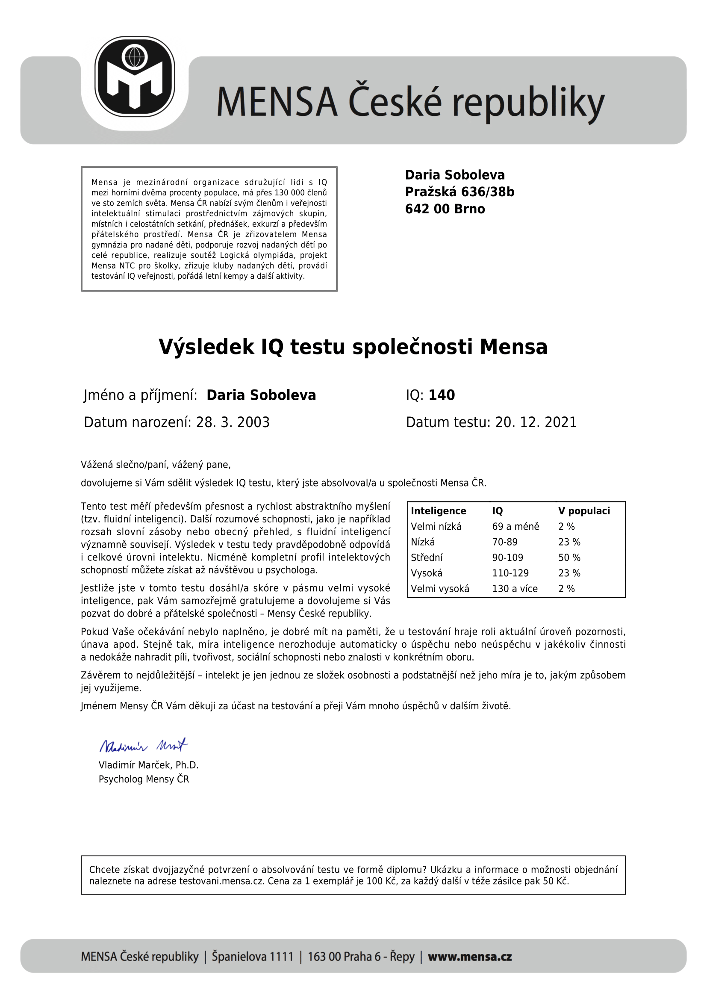

Primary and secondary school:
- School num. 45 in Russia, Archangelsk In my school I was in mathematic class, so we had a lot of mathematic classes, such as Algebra, Geometry, Analitics
- Czech Language Courses 2021-2022 in Prague Education Center
- Applied Informatics at NSPE at CTU in Prague, 1 year
Courses and certificates:
- Mensa IQ Test 
- Czech Language